Summer Learning Program (SLP) hosted by the Academy Software Foundation (ASFW)
Summer 2025 • 4 weeks
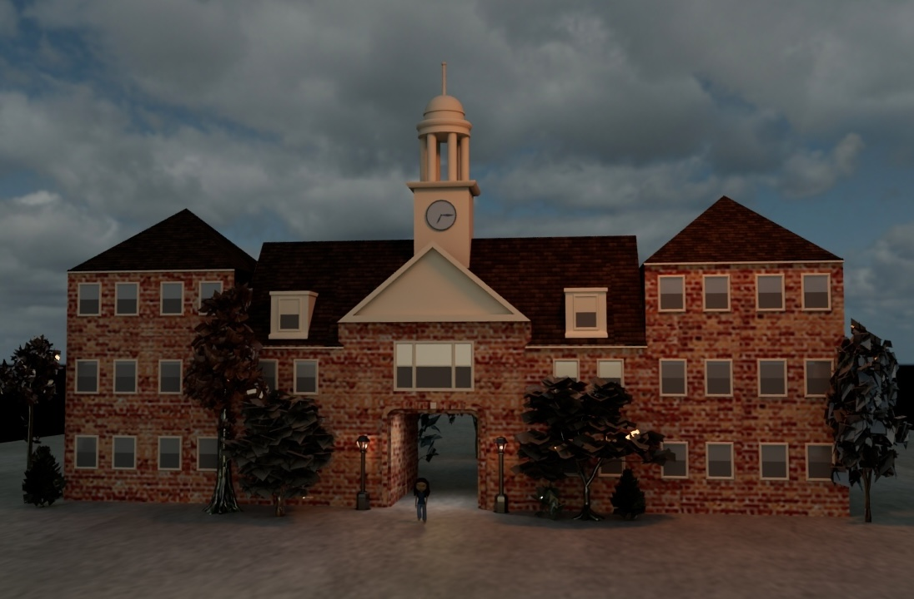
Previous to this project, I had minimal experience with 3D modeling and animation. I had created my first Maya model, a model of my room, a couple weeks prior, but had never modeled a person or character. I had no experience with creating a rig or animating either. Although this was a quite a large project to take on at the level I was at, I believed the best way to learn was by diving straight in and doing.
The first step of this project was designing the character. I modeled my base character after myself. After designing the character, I moved on to modeling it in 3D. I used different techniques including starting from a primitive, quad drawing, and sculpting to create the figure of my character.
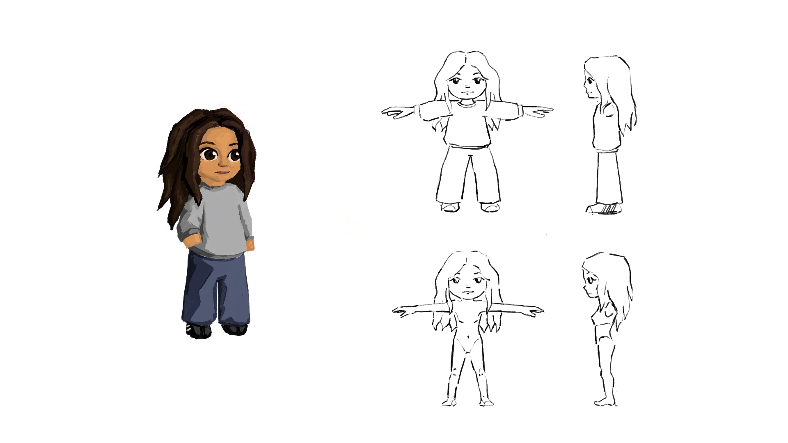
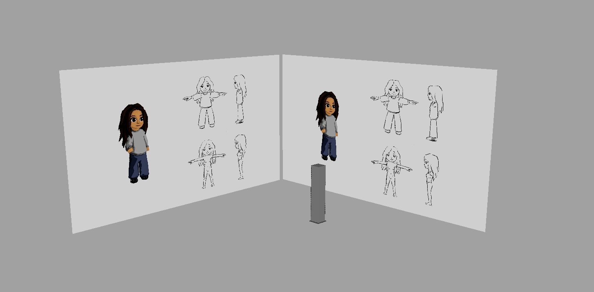
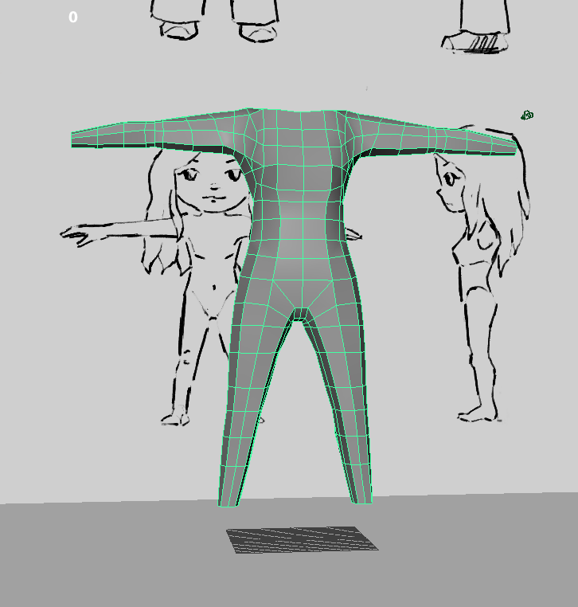
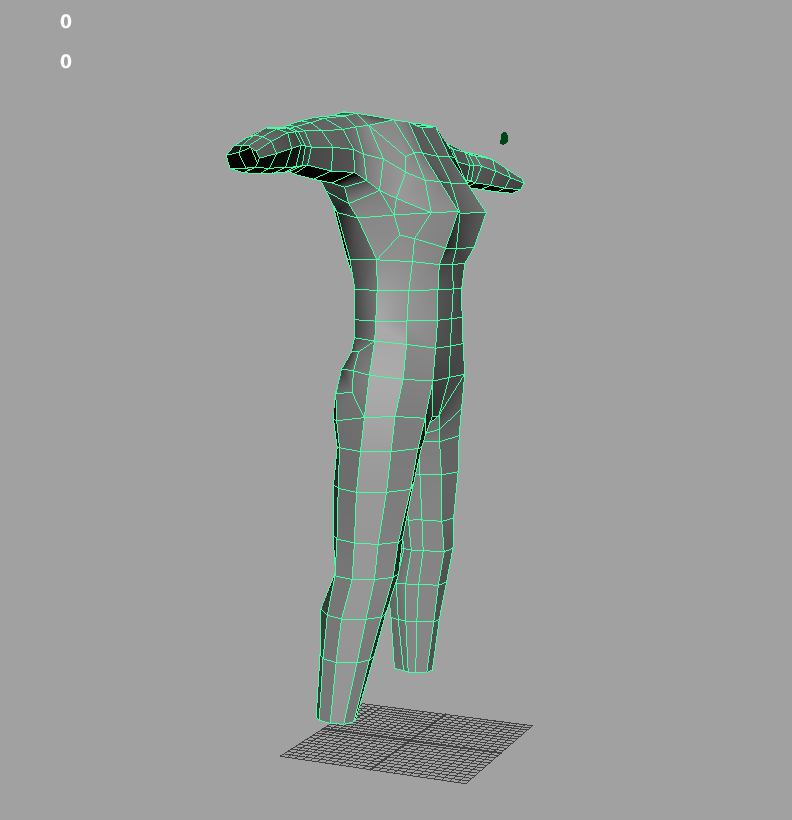
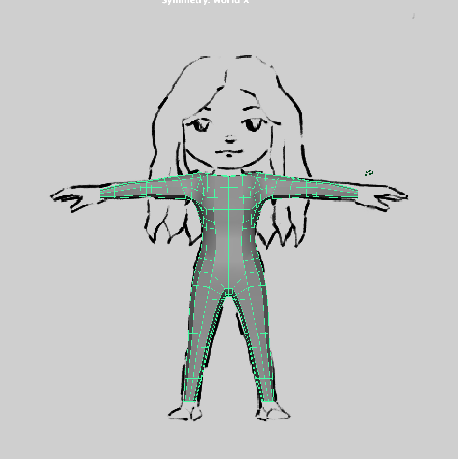
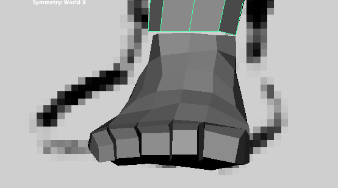
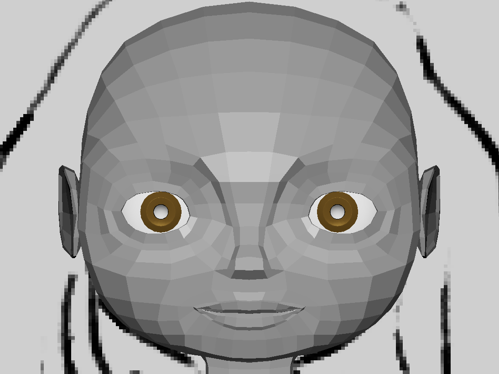
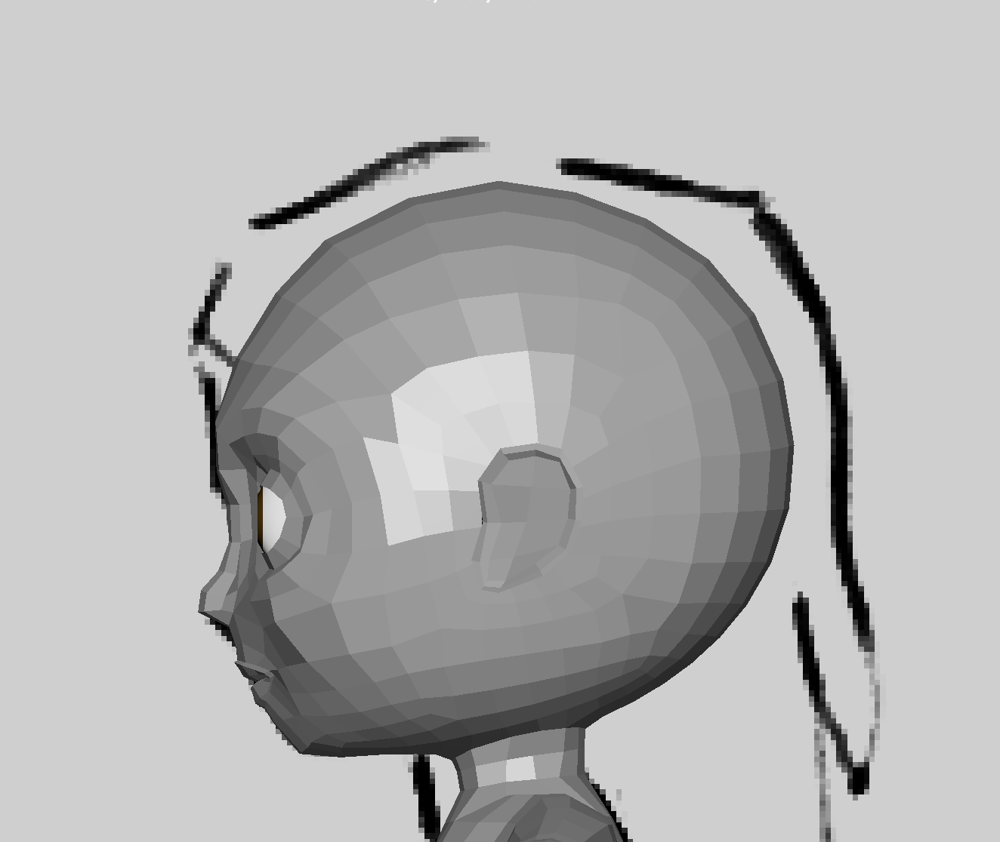
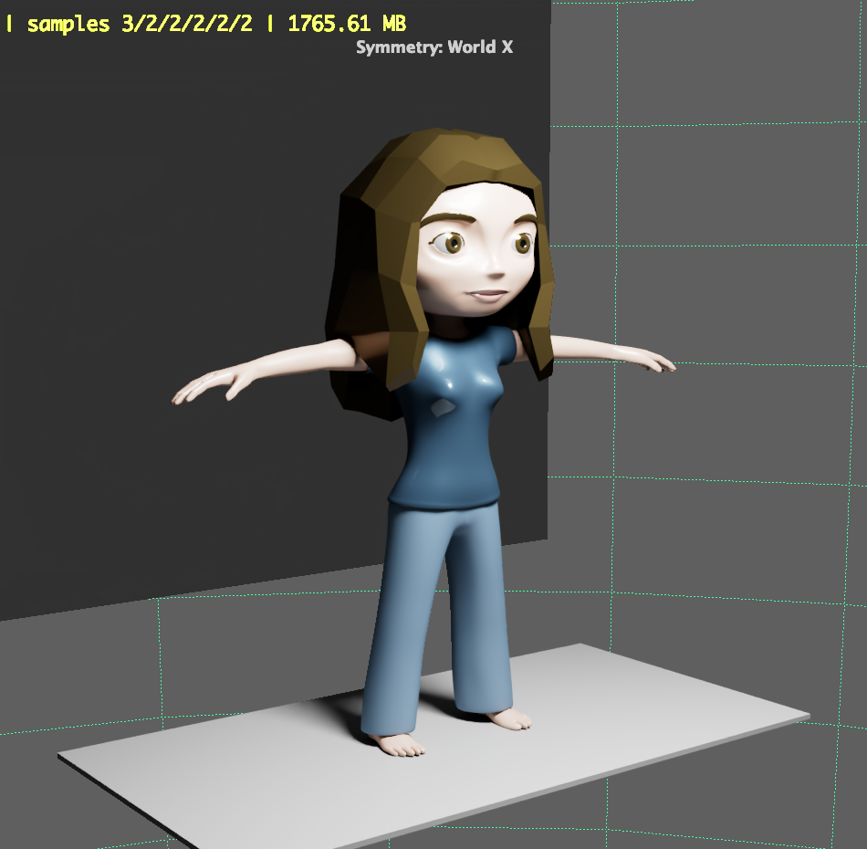
Once my character was modeled and textured, I moved onto rigging and animating a walk cycle. I used a basic Human IK rig to set up the skeleton and then used keyframe animation to create a looping walk cycle.
I worked with weight painting to create more natural movements, specifically in the clothing and the hair. It took a few iterations to get from a very jittery initial walk to a smoother final walk.
Lastly, I created the environment for my character to walk in. I chose Wayland Arch, the dorm I lived in sophomore year at Brown University.
It has a pretty distinctive architecture and provided a good setting for my character to walk in.
This gave me more experience in working with skydomes for lighting and adding additional lights to create a more realistic scene. I also experiemented with texture for the first time. This included texturing the building, trees, and my character's face.
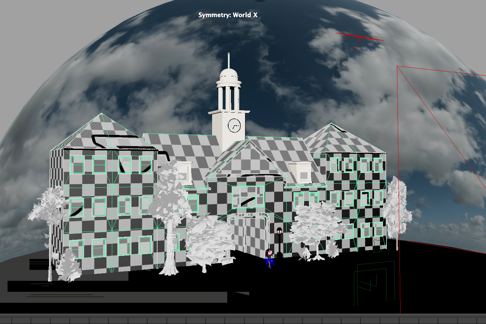
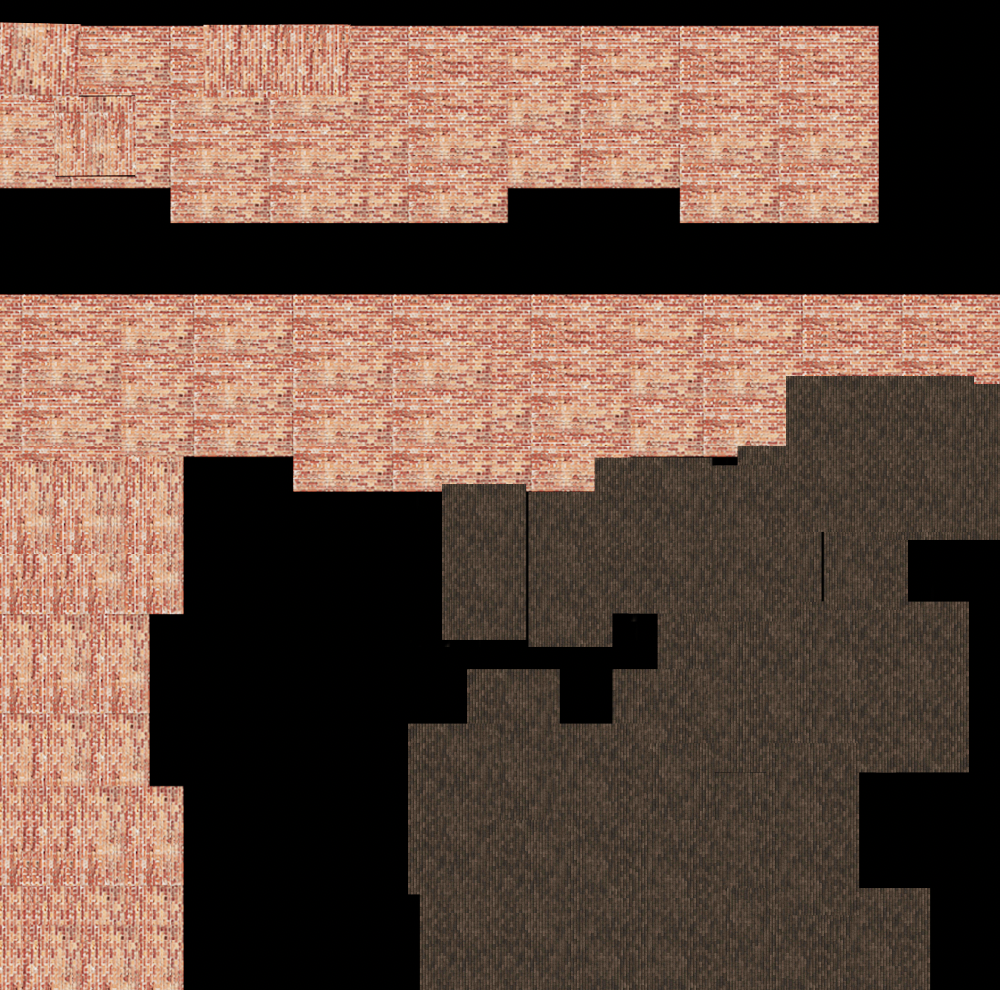
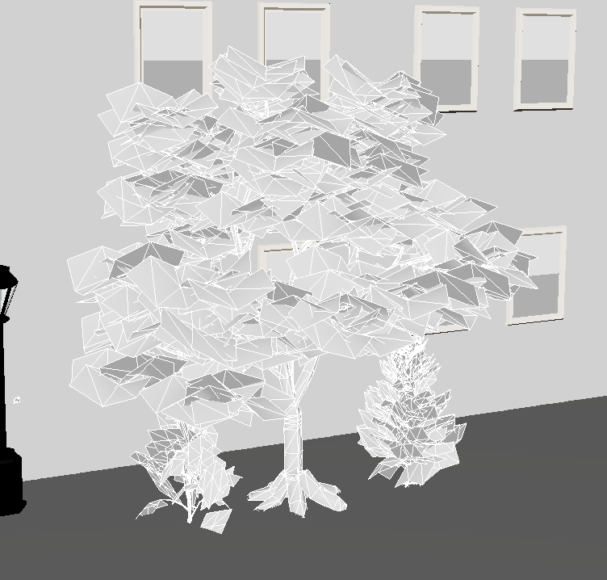
This was a really interesting project that really pushed me to learn as much as I could about 3D modeling and animating in a short, four-week timeline. I am proud of the work I was able to put together in this time frame. It opened my eyes to the possibilities of 3D animation and what can be done to create realistic, high-fidelity animations. If I were to continue on this project, I would work on the textures in the character to make them more lifelike. I look forward to doing more in Maya in the future.